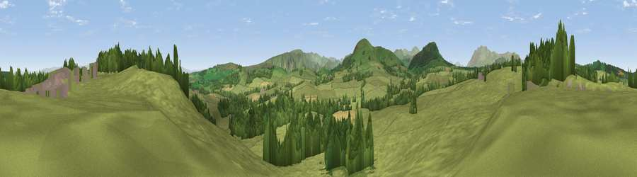

Viewpoint near Penruddock
#22368 in England · top 81% of its area beats it · near PenruddockThe view, rendered

A 360° render of this exact spot computed from the terrain model, tree cover and land cover — summer colours, afternoon light, calibrated against photographs of famous viewpoints. Real trees, hedges and buildings will differ in detail.
The panorama
Grey silhouette: terrain skyline in each direction (720 bearings, Earth curvature and refraction included). Dashed green: skyline with trees (+15 m) and buildings (+8 m) as obstacles. Blue strip: how far the ground is visible on each bearing.
Where the view opens
Wedge length = distance to the farthest visible ground on that bearing (vegetation-aware). Rings at 10, 25 and 50 km.
What fills the view
83% grassland · 15% woodland · 2% cropland ·
Angular shares of the visible panorama (visual magnitude), not map area. Landscape diversity 0.24 (0–1 Shannon).
Key numbers
More beautiful places nearby
The staircase of upgrades: each row has a higher view potential than everything closer. Driving times are estimates from straight-line distance, calibrated against real road routing — check an actual route before setting out.
| Place | Direction | Drive | Score |
|---|---|---|---|
| Viewpoint near Dacre | E · 1 km | ~4 min | 69.0 |
| Viewpoint near Matterdale End | SW · 4 km | ~9 min | 74.4 |
| Viewpoint near Watermillock | SSW · 4 km | ~9 min | 79.0 |
| Viewpoint near Watermillock | SSE · 7 km | ~14 min | 82.6 |
| Viewpoint near Watermillock | SSE · 7 km | ~14 min | 83.5 |
| Viewpoint near Legburthwaite | SW · 16 km | ~28 min | 83.8 |
| Viewpoint near Legburthwaite | SW · 16 km | ~28 min | 84.5 |
| Skiddaw South Top | W · 18 km | ~31 min | 85.8 |
54.63791, -2.87030 · source: screening · position refined by local search. Computed location — check access rights before visiting.